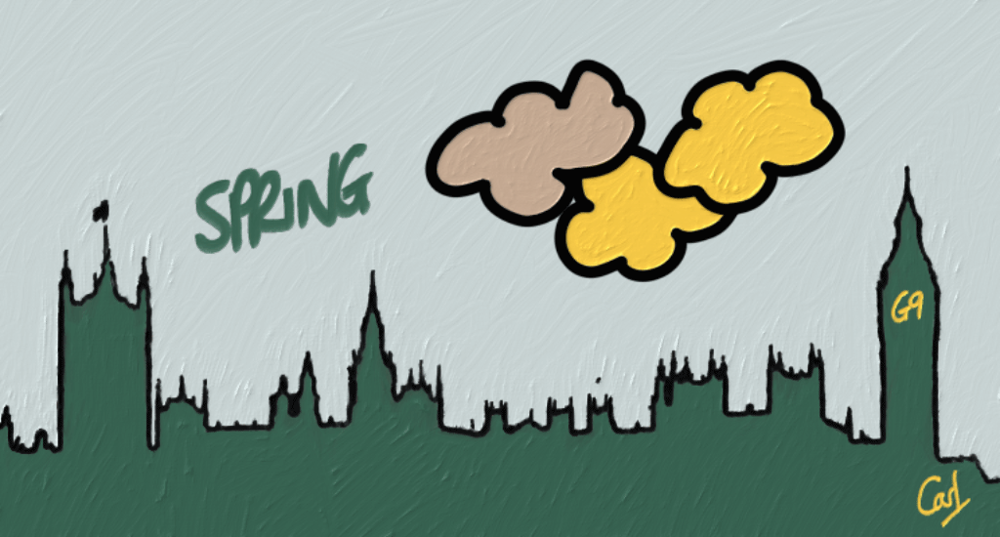
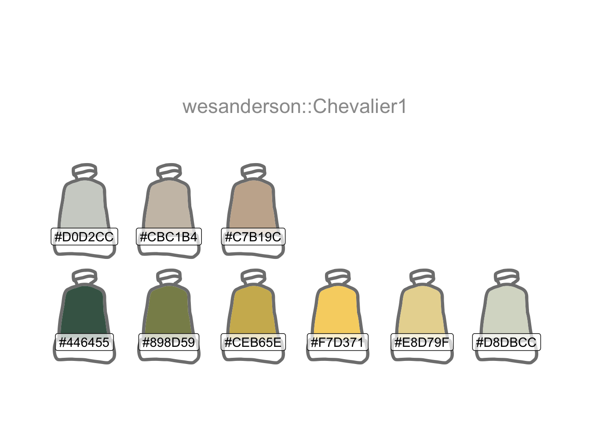
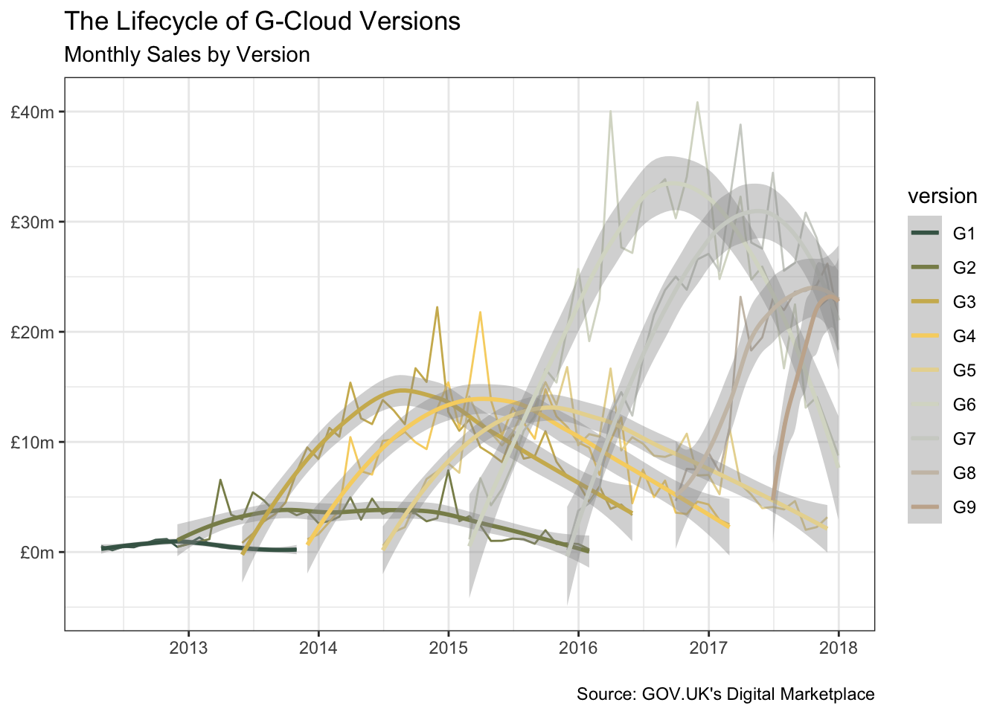
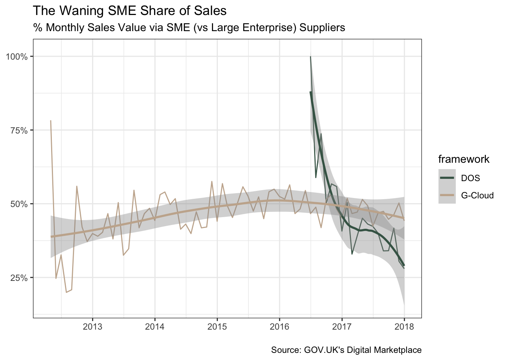
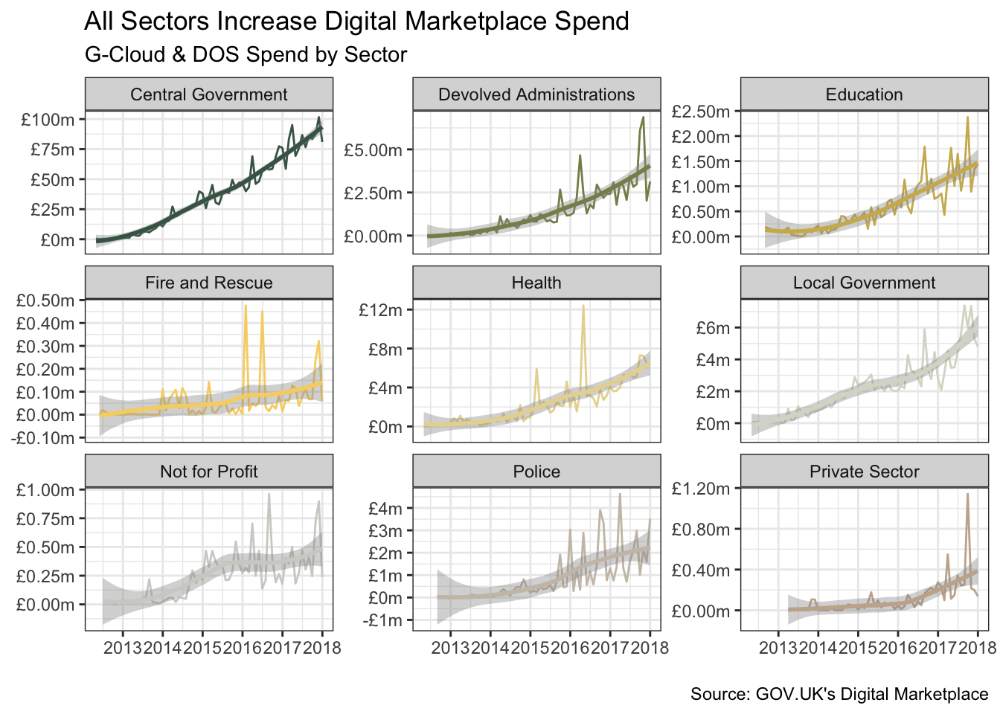
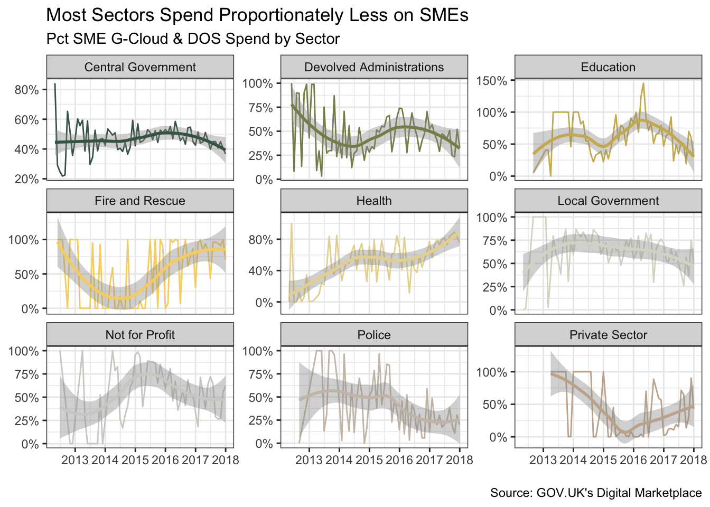

library(conflicted)
library(tidyverse)
conflict_prefer_all("dplyr", quiet = TRUE)
library(clock)
library(scales)
library(ggfoundry)
library(paletteer)
library(usedthese)
conflict_scout()Six Months Later
R
Exploring colour palettes and small multiples using cloud services spend data

In September 2017 I wrote a post entitled Let’s Jitter. It looked at how the SME share of sales evolved over time. I revisited this topic here six months later, along the way adding a splash of colour and some faceted plots.
theme_set(theme_bw())
pal_name <- "wesanderson::Chevalier1"
pal <- paletteer_d(pal_name)
pal <- colorRampPalette(pal)(9)
display_palette(pal, pal_name, shape = "tube")
In Let’s Jitter I assumed the G-Cloud data file adopted the UK Government standard of UTF-8. I used the stringr package to fix any issues.
This time around, I’m importing the files for two frameworks (G-Cloud and DOS) after first checking the encoding to see if I can get a cleaner import. guess_encoding suggests these files use the ISO-8859-1 standard.
url <-
"https://www.gov.uk/government/uploads/system/uploads/attachment_data/file/"
gcloud_csv <- str_c(url, "678283/G-Cloud-spend-Dec2017.csv")
dos_csv <- str_c(url, "678286/DOS-spend-Dec2017.csv")
names <- c(gcloud_csv, dos_csv)
map(names, guess_encoding)[[1]]
# A tibble: 2 × 2
encoding confidence
<chr> <dbl>
1 ISO-8859-1 0.39
2 ISO-8859-2 0.24
[[2]]
# A tibble: 2 × 2
encoding confidence
<chr> <dbl>
1 ISO-8859-1 0.44
2 ISO-8859-2 0.23Next I’ll set up a vector of column names to apply consistently to both files, import the data with the suggested encoding, and bind them into one tibble.
colnam <-
c("sector",
"lot",
"month",
"spend",
"status",
"supplier",
"customer",
"framework")
read_dm <- \(x){
read_csv(
x,
col_names = colnam,
skip = 1,
locale = locale(encoding = "ISO-8859-1"),
col_types = NULL,
show_col_types = FALSE)
}
combined_df <- map(names, read_dm) |>
set_names(c("gcloud", "dos")) |>
bind_rows() |>
mutate(framework = if_else(is.na(framework), "DOS", framework))I’d like to create some new features: Month-end dates, something to distinguish between the two frameworks (G-Cloud or DOS) and the framework version (i.e. G-Cloud 1 to 9). The spend has a messy format and needs a bit of cleaning too.
clean_df <- combined_df |>
mutate(
month_end = date_parse(str_c(month, "01", sep = "-"),
format = "%b-%y-%d") |>
add_months(1) |> add_days(-1),
version = str_remove(framework, fixed("-Cloud ")),
version = str_replace(version, fixed("G-Cloud"), "G1"),
version = str_replace(version, fixed("GIII"), "G3"),
version = str_replace(version, fixed("GServices II"), "G2"),
framework = str_extract(framework, ".{3,7}"),
spend = str_remove(spend, fixed("£")),
spend = str_replace(spend, "^\\(", "-"),
spend = parse_number(spend),
SME_spend = if_else(status == "SME", spend, 0)
)Finding the interval between G-Cloud versions will enable me to calculate and print the average in the next paragraph using inline r code.
version_df <- clean_df |>
filter(version != "DOS") |>
summarise(start = min(month_end), .by = version) |>
mutate(next_start = lead(start),
interval = lubridate::interval(start, next_start) %/% months(1))Every 7.8 months, on average, suppliers are asked to resubmit their G-Cloud offerings with their latest pricing and service descriptions. It’s a chance for new suppliers, often smaller ones, to join the existing list of suppliers and increase overall competitiveness for Cloud services.
Let’s visualise how each of these framework versions grows, matures and fades away as the next one takes over.
vers_summary <- clean_df |>
filter(version != "DOS") |>
summarise(sales = sum(spend) / 1000000,
.by = c(version, month_end))
vers_summary |>
ggplot(aes(month_end, sales, colour = version)) +
geom_line() +
geom_smooth() +
scale_x_date(date_breaks = "years", date_labels = "%Y") +
scale_y_continuous(labels = label_currency(prefix = "£", suffix = "m")) +
scale_colour_manual(values = pal) +
labs(x = NULL, y = NULL, title = "The Lifecycle of G-Cloud Versions",
subtitle = "Monthly Sales by Version") +
labs(caption = "\nSource: GOV.UK's Digital Marketplace")
Let’s Jitter showed signs of a weakening in the SME share of G-Cloud sales by value. This plot shows this trend to have persisted, and also reflects the Digital Outcomes & Specialists (DOS) framework exhibiting a downward trend.
fw_summary <- clean_df |>
summarise(pct = sum(SME_spend, na.rm = TRUE) / sum(spend, na.rm = TRUE),
.by = c(framework, month_end))
fw_summary |>
ggplot(aes(month_end, pct, colour = framework)) +
geom_line() +
geom_smooth() +
scale_y_continuous(breaks = c(0.25, 0.5, 0.75, 1), labels = label_percent()) +
scale_x_date(date_breaks = "years", date_labels = "%Y") +
scale_colour_manual(values = pal[c(1, 9)]) +
labs(x = NULL, y = NULL,
title = "The Waning SME Share of Sales",
subtitle = "% Monthly Sales Value via SME (vs Large Enterprise) Suppliers") +
labs(caption = "\nSource: GOV.UK's Digital Marketplace")
Overall spending via the combined frameworks however continues to grow across all parts of Public Sector. I’ll use a small multiples visualisation technique to show this using ggplot2’s(Wickham 2016) facet_wrap.
sect_summary <-
clean_df |>
filter(!sector %in% c(
"Unregistered or Unknown",
"Utility (Historic)",
"Wider Public Sector"
)) |>
summarise(
sales = sum(spend) / 1000000,
pct = sum(SME_spend, na.rm = TRUE) / sum(spend, na.rm = TRUE),
.by = c(sector, month_end)
)
sect_summary |>
ggplot(aes(month_end, sales, colour = sector)) +
geom_line() +
geom_smooth() +
facet_wrap(~ sector, scales = "free_y") +
theme(legend.position = "none") +
scale_x_date(date_breaks = "years", date_labels = "%Y") +
scale_y_continuous(labels = label_currency(prefix = "£", suffix = "m")) +
scale_colour_manual(values = pal) +
labs(x = NULL, y = NULL,
title = "All Sectors Increase Digital Marketplace Spend",
subtitle = "G-Cloud & DOS Spend by Sector") +
labs(caption = "\nSource: GOV.UK's Digital Marketplace")
The decline in the proportion of spend via SMEs is also fairly broad-based.
sect_summary |>
ggplot(aes(month_end, pct, colour = sector)) +
geom_line() +
geom_smooth() +
facet_wrap(~ sector, scales = "free_y") +
theme(legend.position = "none") +
scale_x_date(date_breaks = "years", date_labels = "%Y") +
scale_y_continuous(labels = label_percent()) +
scale_colour_manual(values = pal) +
labs(x = NULL, y = NULL,
title = "Most Sectors Spend Proportionately Less on SMEs",
subtitle = "Pct SME G-Cloud & DOS Spend by Sector") +
labs(caption = "\nSource: GOV.UK's Digital Marketplace")
R Toolbox
Summarising below the packages and functions used in this post enables me to separately create a toolbox visualisation summarising the usage of packages and functions across all posts.
used_here()| Package | Function |
|---|---|
| base | c[9], is.na[1], library[7], min[1], months[1], sum[6] |
| clock | add_days[1], add_months[1], date_parse[1] |
| conflicted | conflict_prefer_all[1], conflict_scout[1] |
| dplyr | bind_rows[1], filter[3], if_else[2], lead[1], mutate[3], summarise[4] |
| ggfoundry | display_palette[1] |
| ggplot2 | aes[4], facet_wrap[2], geom_line[4], geom_smooth[4], ggplot[4], labs[8], scale_colour_manual[4], scale_x_date[4], scale_y_continuous[4], theme[2], theme_bw[1], theme_set[1] |
| grDevices | colorRampPalette[1] |
| lubridate | interval[1] |
| paletteer | paletteer_d[1] |
| purrr | map[2] |
| readr | locale[1], parse_number[1], read_csv[1] |
| rlang | set_names[1] |
| scales | label_currency[2], label_percent[2] |
| stringr | fixed[5], str_c[3], str_extract[1], str_remove[2], str_replace[4] |
| usedthese | used_here[1] |
References
Wickham, Hadley. 2016. Ggplot2: Elegant Graphics for Data Analysis. https://ggplot2.tidyverse.org.